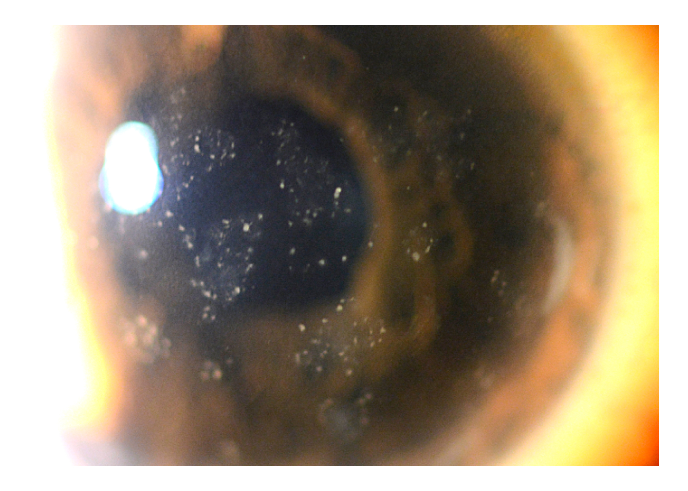

Hypertensive
Uveitis Triage
A patient has anterior uveitis with high eye pressure. What is the most important thing this could be tonight, what workup is worth considering — and who do I call?

UVEA is an educational resource designed to support resident learning. It is not intended to replace clinical judgment, attending consultation, or institutional protocols.
About On Call Now
Short, tappable triage modules for residents responding to uveitis-related calls. Built to help you recognize and escalate — fast.
An educational resource to support resident learning — not a substitute for clinical judgment, attending consultation, or institutional protocols.
Anterior uveitis with high eye pressure
Safety flag. A dangerously high pressure — corneal edema or severe pain — is urgent on its own. Flag it for the attending, whichever branch you land on.
On dilated exam, is there posterior-segment involvement — retinitis, a focal retinochoroidal lesion, or significant vitritis?
Anterior only — medication review
The disease looks confined to the anterior segment. Because many of these patients are already on glaucoma drops, a medication cause is worth checking before any invasive workup.
Is the patient using brimonidine, a prostaglandin analog, or metipranolol — with a bilateral and/or granulomatous picture?
Viral features or undifferentiated
No clear medication cause. The next question is whether the picture suggests a virus — the most important infectious cause to consider in hypertensive anterior uveitis.
Are there viral features — unilateral disease, iris atrophy or transillumination defects, diffuse stellate or granulomatous KPs, a herpetic history (HSV keratitis or zoster), or IOP out of proportion to mild inflammation?
With posterior-segment involvement, an infectious retinitis — toxoplasmic retinochoroiditis or necrotizing herpetic retinitis (ARN) — is the most important diagnosis to consider until proven otherwise.
Consider contacting Uveitis / Retina now (± infectious diseases) — a same-night conversation.
Posterior involvement changes both urgency and workup. Necrotizing herpetic retinitis can progress to detachment and to the fellow eye within days; toxoplasmic retinochoroiditis is common and has directed therapy. A same-night dilated exam and attending contact matter — and corticosteroids alone before an infectious cause is considered can worsen the picture.
Supports recognition and escalation only. Decisions about paracentesis, antimicrobial/antiviral therapy, and dosing follow institutional protocols and attending consultation.
On brimonidine, a prostaglandin analog, or metipranolol — especially with a bilateral and/or granulomatous picture — a medication-associated uveitis is an important and often reversible cause to consider.
Consider contacting the on-call Uveitis service.
These agents are common in glaucoma patients, who already have elevated pressure, so the link is easy to overlook. Brimonidine-associated uveitis is classically bilateral and granulomatous with mutton-fat KPs and can appear a week to years after starting; it typically settles once the agent is stopped — which can spare an extensive infectious workup.
Supports recognition and escalation only. Whether to continue, stop, or substitute any medication is a treatment decision that follows institutional protocols and attending consultation.
When hypertensive anterior uveitis shows viral features, viral anterior uveitis (HSV, VZV, or CMV) is the most important diagnosis to consider.
Consider contacting Uveitis (± cornea if corneal endotheliitis or keratitis).
Viruses are a leading infectious cause, and the three herpesviruses behave differently: HSV — acute, recurrent, dendritic keratitis, sectoral iris atrophy; VZV — follows a dermatomal rash, tends to be severe; CMV — a Posner–Schlossman-like attack with IOP that can exceed 50 mmHg, or a chronic Fuchs-like picture with coin-shaped KPs. Corticosteroids alone before a viral cause is considered can worsen or mask infection.
Supports recognition and escalation only. Paracentesis, antiviral or anti-inflammatory therapy, and any dosing follow institutional protocols and attending consultation.
With no posterior involvement, no clear medication cause, and no viral features, an undifferentiated or noninfectious hypertensive anterior uveitis becomes the working category.
Consider contacting the on-call Uveitis service.
Some hypertensive anterior uveitis is noninfectious — for example a sterile inflammatory process with secondary trabeculitis or trabecular obstruction. On call this is a category of exclusion: viral disease, a medication effect, and posterior infection should stay on the list, since each changes management and several look alike early.
Supports recognition and escalation only. Anti-inflammatory and IOP-lowering decisions follow institutional protocols and attending consultation.